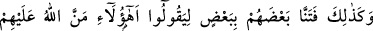
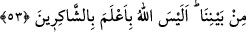

İbadet, ihlâsla yapılınca güzeldir
Yoksa içi olmayan kabuktan ne çıkar?
Duâda ihlasın şart koşulması, Allah’dan uzaklaştırılmaya mani olan ve O’nun ikramını
gerektiren şeylerin en kuvvetlilerinden olduğuna işaret etmek içindir.
“Onların hesabından sana bir sorumluluk, senin hesabından da onlara bir
sorumluluk yok ki,” Müşrikler, fakir müslümanların köle ve miskin oluşlarına dil
uzatmakla yetinmeyip onların îmanlarını da dillerine dolayarak: “Ey Muhammed!
Bunlar, senin yanında yiyecek ve giyecek temin ettikleri için etrafında toplandılar ve
dinini kabul ettiler. Yoksa onlar senin dininden uzak ve sana inanmaktan berîdirler.”
demeleri üzerine Allah Teâlâ, bu fakir mü’minlerin Rasûlullah (a.s.)’in yanından
kovulmasına sebep olması muhtemel müşriklerin bu sözlerini reddederek böyle
buyurmuştur.
Yani, sana gereken sadece onların dış görünüşlerine îtibar etmektir. Onların durumu
ise müşriklerin sözlerinde olduğu gibi iç âlemleri istenilen, hoşnud olunan şekilde
olmadığı halde muttakîlerin sıfatlarına bürünmeleridir. Allah’dan sakınan kemselerin
özelliklerini taşımalarıdır. Müşriklerin dediği gibi batınen halleri istenilen şekilde
olmasa bile îmanlarından hesâba çekildiklerinde görecekleri zarar, sana değil sadece
onlara aittir. Her nefsin hesaba çekilmesi neticesinde ortaya çıkacak zarar, başkasına
değil o nefse döner.
Bu ifadeden maksat, kafirlerin asılsız sözlerini reddetmek, Rasûlullah (s.a.)’i fakirleri
ve aşağı görülen kimseleri eğitme hususunda sabit kılmaktır.
Ebüssuûd Efendi der ki: Cevab önceki cümle ile tamamlandığı halde “Senin
hesabından da onlara bir sorumluluk yok” buyurulması, onların hesaplarının
Rasûlullah (a.s.)’ın sorumluluğunda olmadığını asla şüphe kalmayacak şekilde
mübâlağa ile açıklamak içindir. Bu ise Peygamberimiz (a.s.)’ın hesabının onlara ait
olmamasıdır. Bu ifade tıpkı: “Ne bir an geri kalırlar ve ne de ileri giderler” (el-A‘râf,
7/34) ayetindeki üslûb üzerinedir.
“Onları kovup da zalimlerden olasın!” Bu ifade, öncesindeki olumsuz ifadenin
cevabıdır. “Bize gelmiyorsun ki, konuşalım” cümlesine benzer. Konuşma, sebebi olan
gelme vuku bulmadığı için gerçekleşmemiştir. Âyet de bunun gibidir. Çünkü fakirlerin
hesâbının zararı muhâtaba ulaşsaydı; o zaman bu, îmanda zaafiyeti olduğu vehmedilen
kimselerin kovulup uzaklaştırılması için bir sebep olurdu. Bu sebep gerçekleşmemiştir
ki netîcesi olan kovma işi gerçekleşsin.